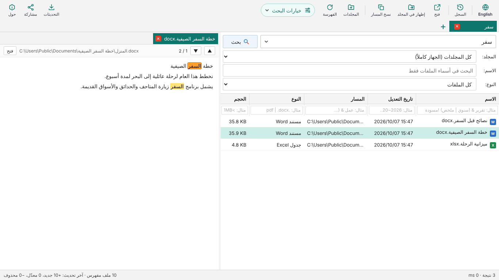

اعثر على أي ملف في جهازك
باسمه أو بالكلمات التي بداخله
Find any file on your PC
by its name or the words inside it
DocSeeker برنامج مجاني لنظام Windows يبحث داخل ملفات Word وPowerPoint وExcel وPDF، مع بحث عربي ذكي، ويعمل دون إنترنت دون أن تغادر ملفاتك جهازك.
DocSeeker is a free Windows program that searches inside your Word, PowerPoint, Excel and PDF files, with smart Arabic search. It works offline, and your files never leave your PC.


لنظام Windows 10 و11 · واجهة عربية وإنجليزية · كل الإصدارات
For Windows 10 and 11 · Arabic and English interface · All versions
